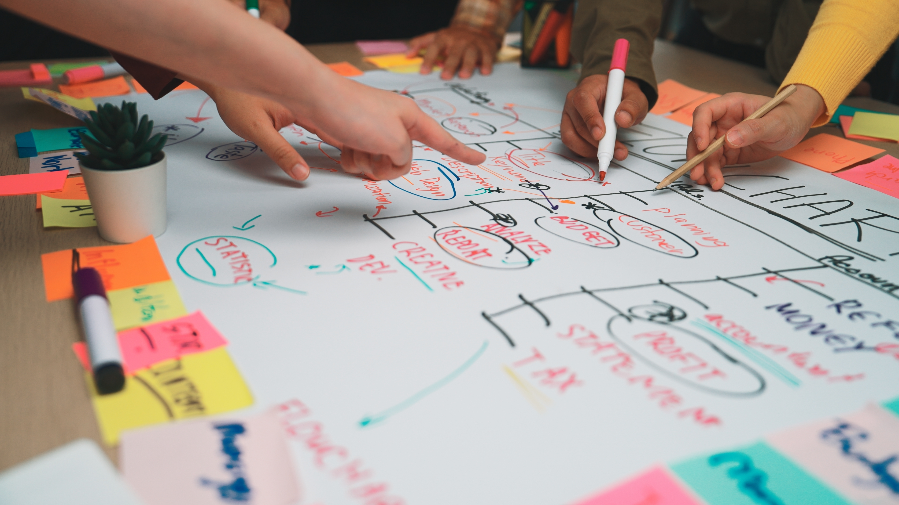

Lluvia de palabras colectivas

La técnica de brainstorming o lluvia de ideas permite “la construcción de ideas surgidas de manera no sistematizada sobre un problema en común en un equipo o comunidad” (Ovalles Pabón & Ovalles Pabón, 2021), promoviendo el trabajo colaborativo y el pensamiento divergente para generar múltiples soluciones.
Imagine esta actividad como una "cosecha de palabras" sobre lo que es más importante para el municipio. Es una técnica para que tanto el equipo técnico como los ciudadanos expresen libremente palabras clave que representen los principios que deberían guiar el Plan de Desarrollo Municipal (PDM). Luego, esas palabras se agrupan en "ejes comunes" que se convertirán en los valores del PDM.
¿Para qué sirve?
Para identificar los valores fundamentales que guiarán el PDM, incorporando la voz ciudadana. Su potencial es grande: asegura que los valores sean auténticos y reflejen lo que la comunidad realmente valora, generando mayor apropiación. La oportunidad de mejora es que las palabras se transformen en valores claros y que se puedan aplicar en la práctica.
¿En qué momento se utiliza?
Se utiliza en la fase de definición de valores para el PDM, ya sea en talleres con el ETM o en sesiones de participación ciudadana abiertas a la comunidad.
Ejemplos
En un taller comunitario, los participantes lanzan palabras como "honestidad", "respeto", "limpieza", "verde", "equidad". El facilitador las escribe todas en una pizarra y luego ayuda a agrupar "honestidad" y "respeto" bajo el valor de "Transparencia", y "limpieza" y "verde" bajo "Sostenibilidad Ambiental".
También, se podría usar la herramienta de "nube de palabras" virtual donde los participantes envían palabras y se forma una imagen con las más repetidas, para luego discutirlas.
Caso práctico
Durante las audiencias públicas o talleres participativos para la construcción de su PDM, la Municipalidad de Corrientes, ha promovido la recolección de palabras clave de la ciudadanía para identificar los valores más apreciados y prioritarios para el cantón, integrándolos en la visión del desarrollo local.
Inténtelo
- Recolecte palabras clave.
- Clasifique las palabras por afinidad.
- Discuta el significado de cada eje.
- Acuerden una lista oficial de valores.
Referencias
Estas son algunas fuentes para investigar más acerca de esta herramienta:
Ovalles Pabón, F. O., & Ovalles Pabón, L. C. (s.f.). Kit de herramientas para la formulación de proyectos de I+D+i en el área TIC a partir del proyecto formativo. Servicio Nacional de Aprendizaje (SENA), Grupo de Investigación GINDET y CEDRUMNS. https://doi.org/10.13140/RG.2.2.33144.60162